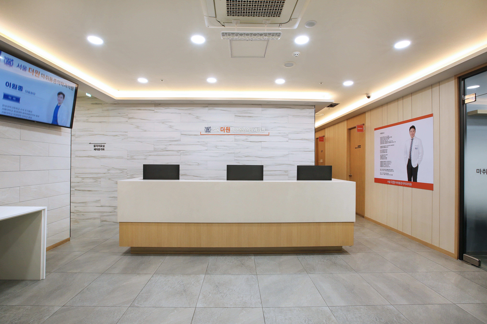
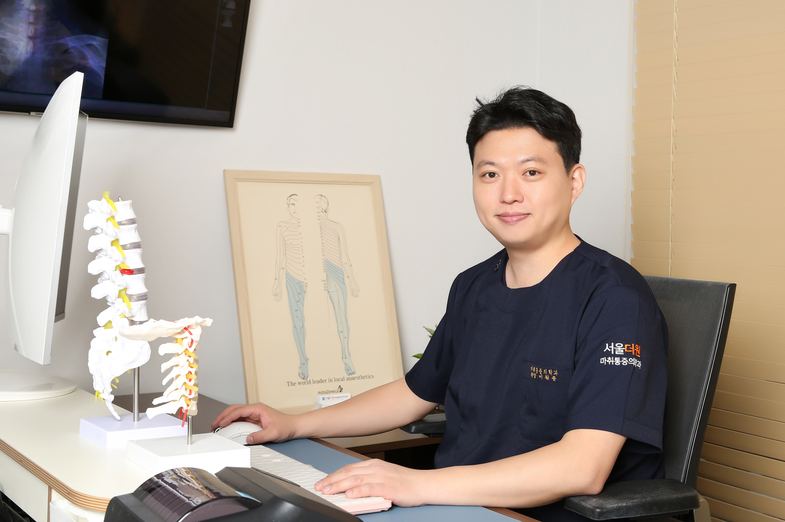
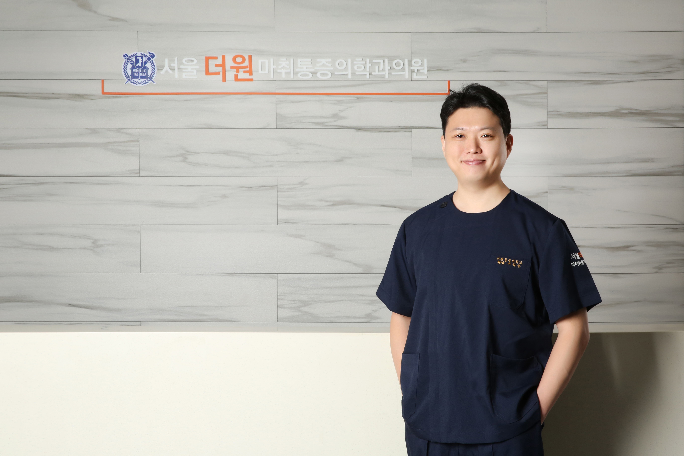
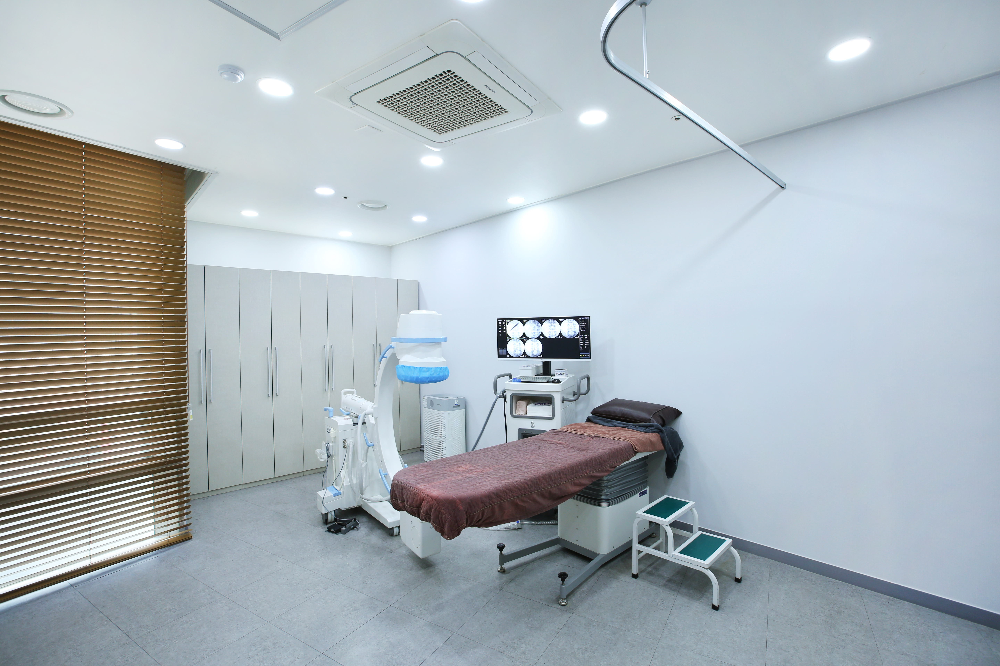
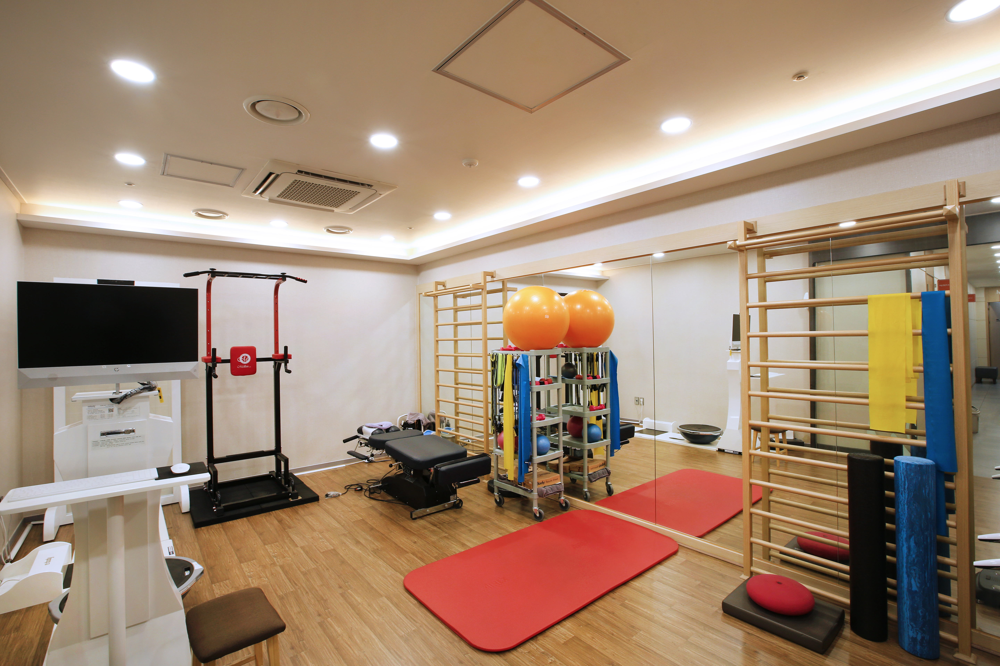
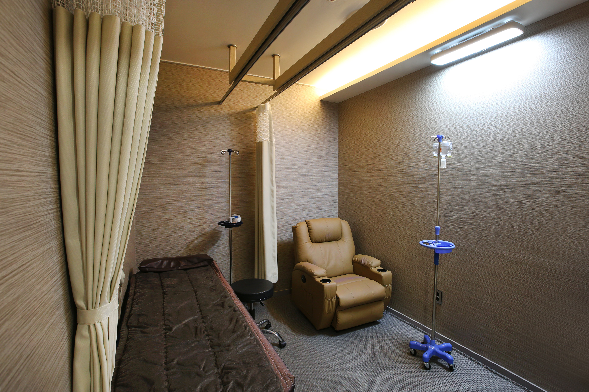
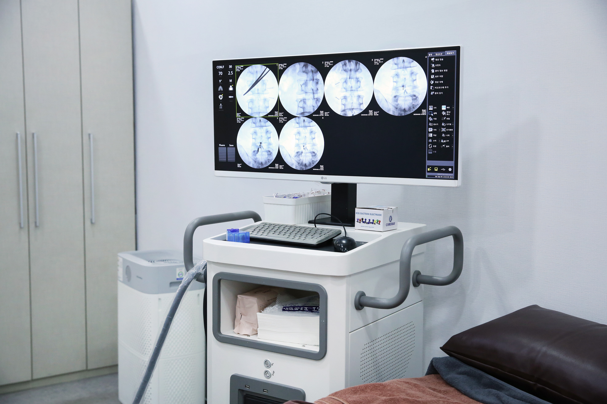
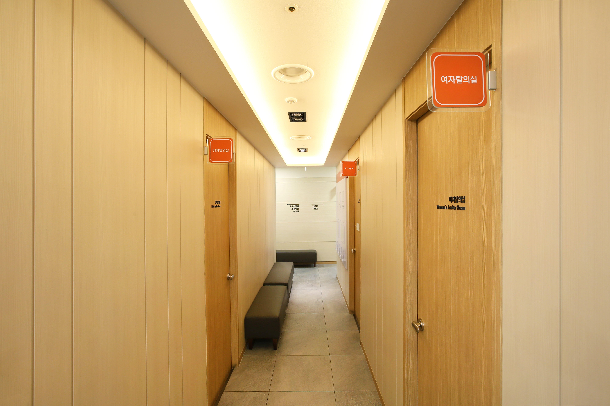

초음파(Sono) 유도 하에 근육·힘줄·인대·신경을 정확히 확인하고 주사치료를 시행합니다.
C-arm 영상 유도 하에 목·허리·관절 부위에 정확한 주사치료를 시행합니다.
가는 카테터로 신경 주변 유착을 풀고 약물을 주입해 통증과 연관통을 줄이는 비수술 치료입니다.
PDRN(DNA) 약제로 통증·염증을 완화하고 조직의 재생을 유도하는 주사 치료입니다.
초음파 에너지 파동으로 관절·인대·힘줄의 염증을 없애고 재생을 촉진하는 비수술 치료입니다.
증상과 목적에 맞춘 맞춤 수액을 1인실에서 편안하게 받으실 수 있습니다.
사람은 누구나 통증을 경험합니다. 어떠한 통증을 느끼는지, 통증으로 인한 생활의 불편함은 무엇인지 경청하고 이해하여 정확한 진단과 효과적인 치료를 제시하겠습니다. 판교 역군들의 통증지킴이가 되겠습니다.